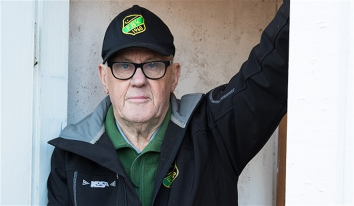

Klubbens historia
Frillesås är en relativt ung elitklubb som föddes fram när det lössläppta 60-talet föddes. Men ideerna föddes i slutet av decenniet före. Det som började som en rolig grej på slutet av 50-talet har idag blivit ett elitlag som håller till i toppskiktet av bandyns seriesystem. Bröderna Johansson (Sven och Erland) samt Gösta Johansson drog i gång med hjälp av ett antal vänner för att roa sig med det röda nystanet på isarna runt Frillesås. 1960 bildades klubben och en isbana gjordes i ordning uppe på Lillesjön. Där spelade man fram till 70-talets mitt då Sjöaremossens isbana såg sitt ljus. Där fanns ju också en av den tidens lokalkonkurrenter - Sunvära SK - som det spelades många heta derbyn emot! På den tiden var de numret större än Frillesås, men den ordningen ändrades i början av 80-talet när Frillesås fick fram en riktigt bra generation bandyspelare. Där fanns sådana spelare som Magnus Åkerberg, Morgan ”Mojje” Johansson, Martin Dehlryd, Per-Erik ”Perra” Andersson, Johan Sandklef, Stefan Krantz, Göran Martinsson och Kjell Hultén.
Detta kompletterades bra med Tommy Olsson, Janne Björnehag, Bengt Martinsson, Torbjörn ”Smeen” Larsson och absolut den spelare som nog betytt mest för bandyn i Frillesås - Lars Andersson. Andersson, som kom från Ale/Surte, var den som lyfte föreningen från att kanske bara hålla på med bandy (för det var en bra träning fram till sommarens fotbollsspel) till att verkligen satsa att försöka bli ett bra bandylag. Ytterligare en spelare från Ale/Surte som betytt mycket för klubben vid namn Tommy Rosberg, kom som spelande tränare 1986. Han var den som verkligen bar laget upp från dåtidens division 2 upp till division 1. En av de största matcherna FBK gjorde var sista kvalmatchen uppe i Vänersborg mot Blåsut en kväll i mars. Frillesås låg under med 1-4 i paus men Rosberg och grabbarna vände matchen till vinst med 9-6 efter 6 mål av Tommy!
Efter det så blev det lite jojo mellan ettan och tvåan några år. Tränare kom och gick. Det var Bernt Knöös, Christer Corneliusson, och några till. Även Tommys bror Stefan var några år i klubben som både tränare och spelare. På spelarsidan var det också en del omsättning. Den gyllene generationen började trappa ner på sitt bandyspel men en ny var nu på väg. Denna gång var det spelare som Patrik och Pierre Blickander, Tobias Johansson, Anders Gunnarsson, Jonas Josefsson och Jonny Längefors. Detta spetsades till med spelare utifrån som t.ex. Harri Bergbacka, Tommy Åhs, Ulf Grönros, Peter Hellström och Börje Carlsson. En annan spelare som var i Frillesås ett par säsonger under denna period men som kanske inte alla kommer ihåg, var Håkan Svensson. Han kom från Oskarström och var målvakt. Håkan som senare satsade på fotboll spelade sedan många säsonger i Halmstad BK och fick även göra ett antal landskamper." På senare åren har FBK fått fram bröderna Johansson, Mattias (IFK Kungälv,Villa BK) och Fredrik (IFK Kungälv).Våren 2018 blev FBK historiska då de som första hallandslag någonsin blev klara för elitserien! Spelar på Sjöaremossens IP och säsongen 2018/2019 blev den första någonsin i Elitserien. Kvalade sig kvar både den första och den andra säsongen. Spelar 2021/2022 den fjärde raka säsongen i Elitserien.